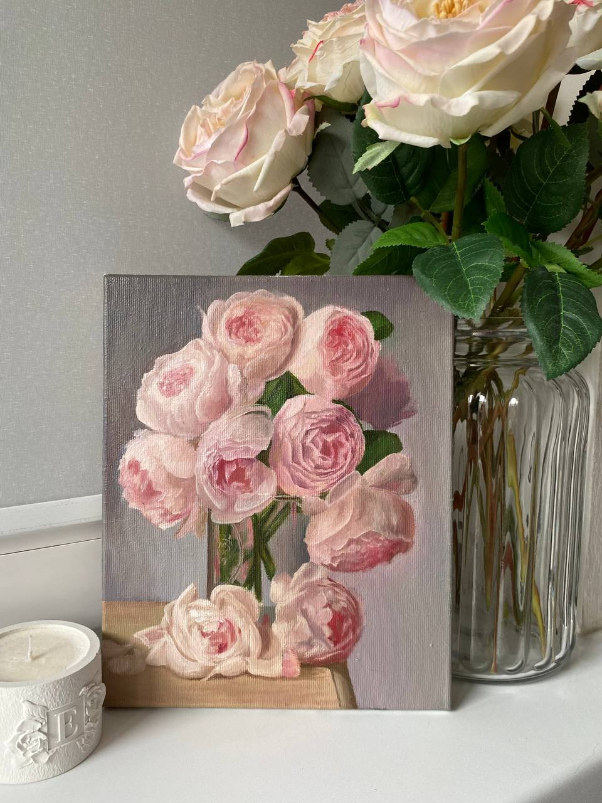
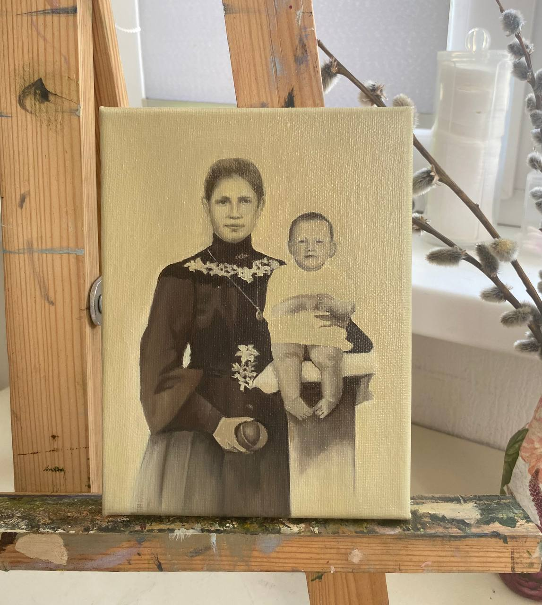
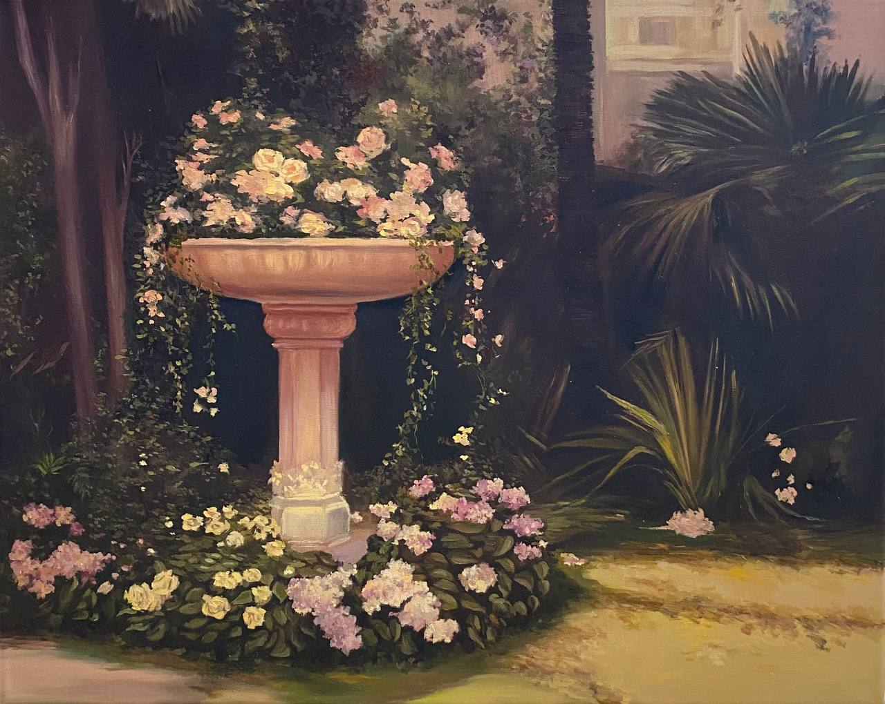
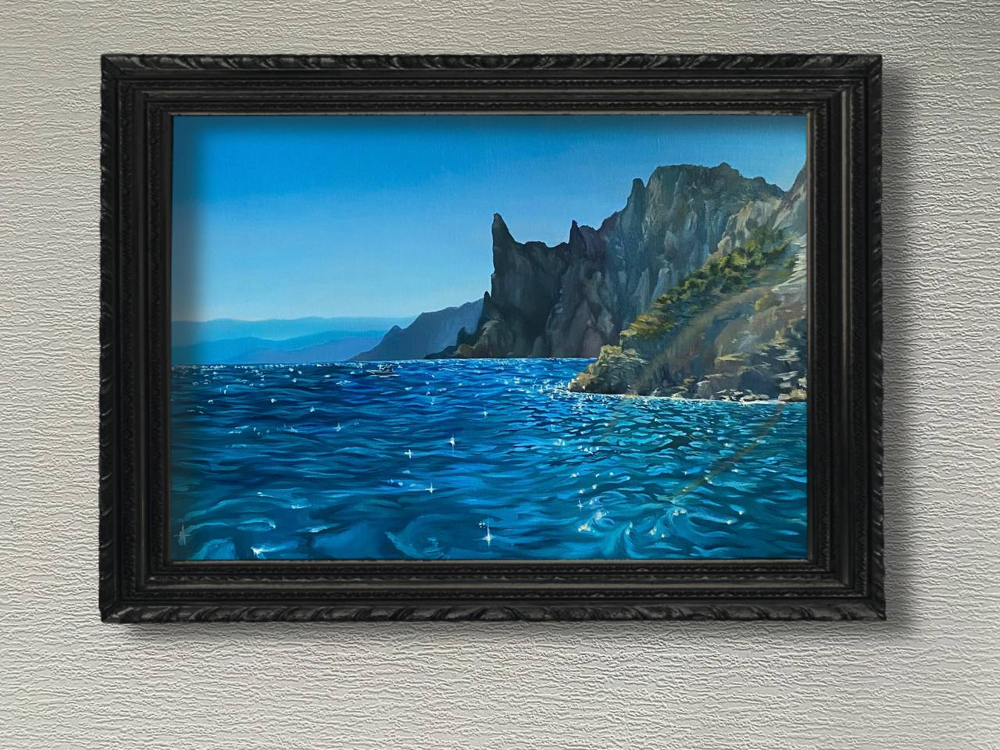
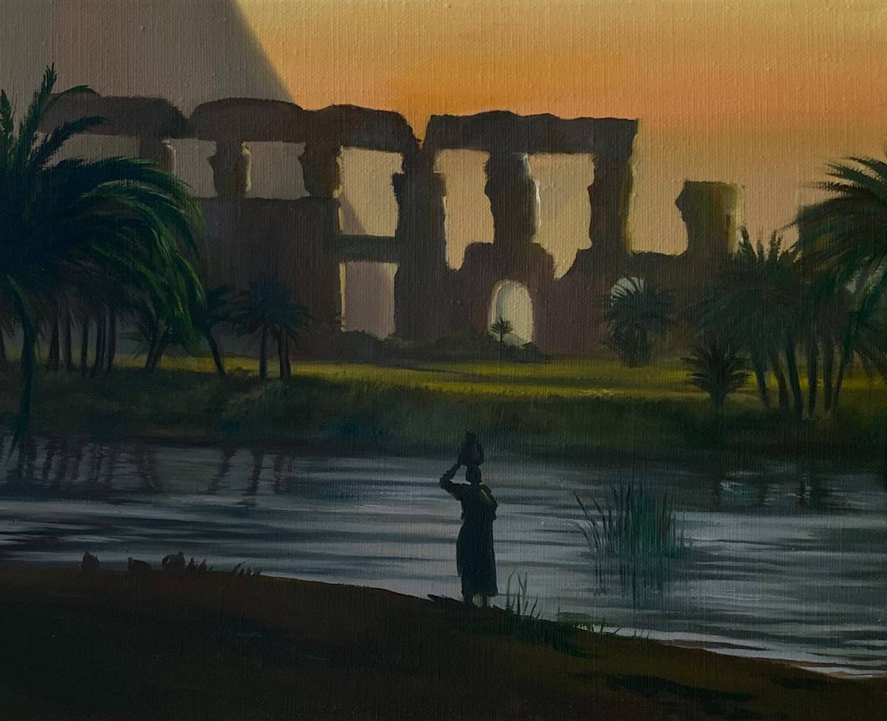

Пионы

Комментарий к картине:
"Очень меня завораживает наблюдать за процессом создания картин, как постепенно, с каждым мазком вырисовывается нечто прекрасное, нежное и живое.
С каждым кадром вижу, сколько чувств вкладываю в свою работу"
Масло, холст 18x24см
Фотопортрет

Примечание художника:
"Иногда самое ценное, что мы можем сохранить - это память На этой картине реконструкция по советскому фото Но есть одна интересная деталь: лица мамы и малыша взяты с двух разных фотографий, а «тела» и позы с ещё одной, найденной, вероятно, в интернете. Заказчица собрала свой образ из фрагментов прошлого, а я перенесла его на холст Такие работы - это всегда немного больше, чем просто портрет. Это восстановление семейной памяти, которой, может быть, никогда и не существовало в таком виде, но которая теперь стала возможной."
Фонтан

Пару строк о произведении:
"Эта картина - как фрагмент из сна: забытый уголок сада, где мраморный фонтан утопает в цветах Розы и гортензии нежно обвивают чашу, будто сама природа решила украсить архитектуру своим языком."
Масло, холст 50x40см.
Царский пляж

Комментарий художника:
"Красота тех мест(Крыма) неописуема, зрелищна и масштабна. Сделать фотографию на память - одно, но вот вдохновиться и написать картину - совсем иное чувство и другие впечатления, которые останутся со мной еще надолго."
Масло, холст 60x40см.
Закат, руины и женщина у реки

Мысли и размышления художника:
"Сколько же тайн хранят в себе эти руины..? Эта вода, загадочная тень женщины Пусть она теперь живёт своей жизнью и рассказывает свою историю тем, кто захочет остановиться и всмотреться."
Масло, холст 25x30см.